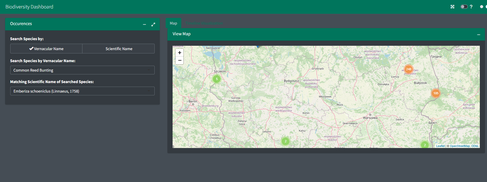
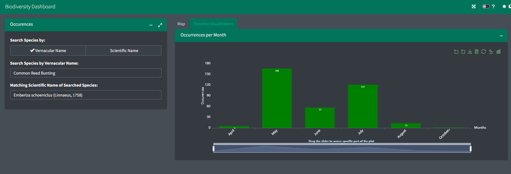

An interactive Shiny application that visualizes biodiversity data on maps and timelines, helping researchers and enthusiasts explore species distributions and observation patterns.
📖 About The Project
The Biodiversity Dashboard is a sophisticated Shiny application designed to visualize and explore biodiversity data. It allows users to search for species by scientific or vernacular names and displays observation data on interactive maps and timeline visualizations.
✨ Features
- Interactive Species Search: Find species using scientific or vernacular names
- Dynamic Map Visualization: View species observations geographically
- Temporal Analysis: Explore when species were observed through timeline visualizations
- Fast Performance: Optimized for quick initialization and responsive interactions
- Modern UI: Styled with CSS/Sass for an enhanced user experience
🚀 Installation
You can install the development version of BiodiversityDashboard from GitHub:
# Install remotes if you haven't already
if (!requireNamespace("remotes", quietly = TRUE)) {
install.packages("remotes")
}
# Install BiodiversityDashboard
remotes::install_github("Ramdhadage/BiodiversityDashboard")🖥 Live Demo
Try the BiodiversityDashboard directly in your browser: click on me
🗺️ Roadmap
Completed Features ✅
-
Species Search Functionality:
Users can search for species using scientific or vernacular names. The application displays observations on the map after search returns matching names.
Informative Default View
Default view presents meaningful data rather than an empty map and plot.Timeline Visualization
Visualization of temporal patterns when selected species were observed.Public Deployment
Available on github.ioModular Architecture
Implemented Shiny modules:mod_loadData,mod_timelineVisualization, andmod_viewMap.Test Coverage
Added unit tests for critical functions and edge cases.Enhanced Styling
Used fresh with Sass for improved aesthetics.-
Performance Optimization
Shiny caching for application performance
memoise for function memoization
Fast data loading with
data.table::fread()Internal data storage in
sysdata.rdaServer-side-selectize inputs
JavaScript libraries (Echarts4r, leaflet) for visualization
shinyWidgets for input components
JavaScript Visualizations
Used JavaScript for map popups, labels, and monthly occurrence plots.Dynamic UI Module
Created separate module for species selection based on name typCode Refactoring
Functions fordropdownBasedOnRadioBtnandupdatedropdownBasedOnRadioBtn, numbered modules, dark mode support.
Upcoming Features 🔜
Enhanced JavaScript Integration
Implement rich media elements in popups, interactive labels, and loading spinners through custom JavaScript for a more engaging user experience.Comprehensive Test Coverage
Expand unit testing to cover additional functions and edge cases, ensuring robust application behavior across all scenarios.-
CI/CD with GitHub Actions
Implement automated workflows for continuous integration and deployment, including:- Automated R CMD check across multiple operating systems
- Code coverage reporting
- Automated package testing on pull requests
- Seamless deployment to GitHub Pages and shinyapps.io
-
Modern UI with bslib
Transition from bs4Dash to bslib for a more polished interface, leveraging:- Bootstrap 5 components and utilities
- Custom theming with Sass variables
- Responsive card-based layouts
- Improved dark mode implementation
-
Comprehensive Documentation
Create and deploy extensive documentation including:- Function reference with examples
- User guides with vignettes
- Developer guidelines
- Interactive tutorials
- Automated deployment to GitHub Pages using pkgdown
Expanded Testing
Add more test cases for broader function coverage.
📚 Documentation
For more detailed information and usage examples, please refer to the package documentation.
🤝 Contributing
Contributions are welcome! Please feel free to submit a Pull Request or open an Issue on our GitHub repository.